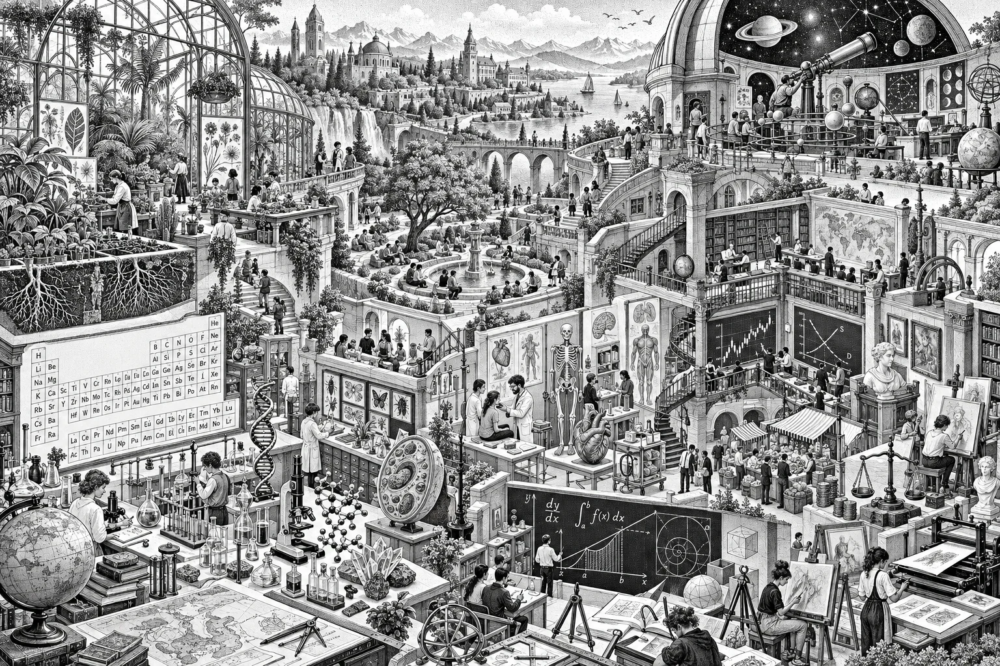

01 / THE WORK
You own
the record.
Lessons, drafts, and revisions live in a GitHub repo you manage. Open the work and see what changed.
AI can explain almost anything.
OpenTutor is theHere from Reddit or Hacker News? Thanks for stopping by.
We’d love to work with you.


01 / THE MANIFESTOYou choose what your child learns, set the pace, and review their work. OpenTutor brings the lessons, tutoring, and saved work together so you can see what is happening.
One place for lessons, questions, and the work your child makes.
GitHub keeps the files and their history. Discord holds classroom conversations. Vibe helps explain the lessons. The parent chooses the work and makes the decisions.

You set the pace and learning goals. AI supports those choices; it does not make them for your child.
Read the assignment, check the draft, and review the feedback in files you can open.
Saved drafts and revisions become a portfolio you can return to as your child grows.
What changes when you can follow the work?
See the difference
02 / THE DIFFERENCEYour files, the tutor's instructions, and the next learning step stay in view. Three things make that possible.
01 / THE WORK
Lessons, drafts, and revisions live in a GitHub repo you manage. Open the work and see what changed.
02 / THE HELP
Vibe's public repository includes its code and prompt files. Review the current instructions before use.
03 / THE DIRECTION
Choose the assignments, review the attempts, and decide when to move on or spend more time.
Best for families and small learning groups ready to manage the files, any classroom tools they choose, and regular review.
See the setup and costsWhat does that help look like during a lesson?
Meet the tutor
03 / THE TUTORVibe can explain an idea or offer a hint. Younger learners work with you; eligible teens can ask in Discord.
With the assignment or schedule you provide, Vibe can offer a hint, explanation, or next step. The learner still does the work, and you stay close to the conversation.
A LOOK INSIDE THE CLASSROOM Illustrative / not a live chat
See how a conversation can turn into something a parent can review.
01 / #math-help
A half and a third are different-sized pieces. Split the same whole into six equal pieces. How many sixths make a half? How many make a third?
Exactly. The denominator names the size of the pieces. Try 1/4 + 1/2, and explain which size you choose.
02 / #daily-plan
Open your schedule with your parent. Which assignment is due next, and which part would you like help breaking into steps?
Good plan. Draw two equal-sized wholes, divide both into sixths, and label the pieces. Show your parent before moving to the written explanation.
03 / #work-review
That describes the last step. What did you change before adding? Explain why 1/2 became 3/6 and 1/3 became 2/6.
That explains your thinking. Put it beside your drawing, keep the first draft, and ask your parent to review the revision.
Example conversations and work, not live student data. You decide what to save and review.
A helpful conversation is only one part of learning. Keep the student's attempt and correction too.
See where the work lives
04 / THE RECORDA repo is a shared folder with a history. Give plans, grade-specific curriculum, assignments, private student work, and agent instructions a clear home so everyone can find what they need.
AN ORGANIZED CLASSROOM One repo / a shared starting point
Choose a view to see how the same structure helps each person — and the agents helping them.
YOUR CLASSROOM REPO
Highlighted places connect to the selected example. Links open the real repo.
FOR PARENTS & TEACHERS
Set the week and review the work from one place. A clear structure makes it easier to pick up where you left off.
Use the README to find the learner's workspace and the shared lessons.
Put the assignment in the learner's schedule, with a link to the brief.
Open their subject folder to compare the attempt, feedback, and revision.
WHAT GETS EASIER
You know what's planned, where the work is, and what changed.
FOR YOUR STUDENTS
In a local or adult-managed private copy, the learner's schedule and subject work stay together. An adult picks the grade track and next task. Printed files work too.
Check the schedule for the next assignment an adult chose.
Open the selected grade lesson or assignment brief, then use its guide or reference.
Save notes, drafts, and revisions in the matching subject folder or portfolio.
WHAT GETS EASIER
Less time finding the task. More time working through it.
FOR YOUR AI AGENTS
Point your agent to the task, the reference, and the learner's attempt. Organized files make that context easier to share.
Use the teacher prompts to set how it should tutor, plan, or help review.
Share the assignment brief and relevant reference so its help fits the task.
Include the learner's draft and the part they are stuck on. You review the advice.
WHAT GETS EASIER
The agent has a clearer task, useful references, and work to respond to.
Keep the history, too. A GitHub commit is a saved version with a note. Save one as work changes so you can return to earlier drafts. Keep identifiable learner work in private, access-controlled storage.
Start with this structure, then fill it with lessons that fit your learners.
Explore the K–8 planning guides05 / K–8 TEACHING LIBRARY
A working K–8 teaching library: expanded assignment libraries, scope drafts, and starter lessons, with coverage varying by grade. Open one grade hub to see what is ready and what still needs adult planning.
01 / K–2
02 / GRADES 3–5
03 / GRADES 6–8
Choose one grade folder for one learner at a time. These planning materials do not promise a complete school year or standards coverage. Check current coverage and gaps before planning.
01 / READ
A shared guide to cells, photosynthesis, and how living things work.
Open the biology guide02 / GRADE 4 SCIENCE
Turn a science idea into a diagram and explanation you can review.
Open the assignment brief03 / GRADE 4 MATH
Explore proportions, tiling, and spirals with the Golden Rectangle Builder.
Read the lessonYou choose the lessons and review the work.
Start with one lesson. Add the tools when you're ready.
Set up your classroom06 / THE SETUP
Start with the files on a device or on paper. Add an adult-operated classroom chat and tutor only if they fit your family; the adult manages access and reviews any help each week.
Time and cost: Vibe needs API keys and usage-based API charges; hosting may add costs. The learning files can be used without Discord or an AI tutor.
Browse the teaching library, then download or print the guides and assignments. For online work, copy only the materials you need into an adult-managed private workspace.
GitHub forks are public. Keep identifiable learner work in separate, private, access-controlled storage; do not put it in a public fork.
Discord is optional. If you use it, an adult creates and manages the server and decides whether a learner may use it under the platform's age rules and local requirements.
Follow Vibe's instructions to configure the bot, permissions, and API keys. Keep it running and review its replies.
Get help drafting plans and templates. You check the content before using it.
Use a simple routine to turn the tools into a school day.
Walk through a school day
07 / THE DAYThis is an example rhythm, with breaks between blocks. Adjust the times and workload for your child's age and needs. Each block ends with something you can read, check, or discuss.
Choose today's tasks together. The learner writes a short checklist and opens the assignment files. Done: they can explain what they will make.
Read a reference, solve the assigned problems, or draw and explain a science idea. Done: a first attempt is saved in the subject folder.
If you use Vibe, an adult operates or supervises the chat according to the learner's age and platform rules. The learner then explains the help in their own words. Done: a corrected attempt and a note about what clicked.
Read the saved work and compare it with the assignment's grading criteria. Done: a feedback note and one clear next step.
Build a webpage, revise a research brief, or make a diagram. Done: a saved draft or finished artifact, with a sentence explaining the choices.
Save a commit with a short note about what changed. The parent checks the day's checklist and chooses the next task together with the learner.
The saved work gives you something concrete to discuss. You decide when to move on or spend more time.
See how parent oversight works
08 / PARENT OVERSIGHTYou choose the lessons, set the pace, and check the learning. Use your child's attempt and explanation to decide what happens next.
PARENT OVERSIGHT, IN PRACTICE Choose / check / adjust
A helpful tutor exchange gives you something to review. Your check-in turns that work into a decision about the next lesson.
COMMON QUESTIONS
You do. You choose the work, the pace, and the access rules. Vibe helps with explanations and questions; adults run the classroom.
No. The guides and assignments can be downloaded, printed, or used in local files. An adult manages online accounts and operates tools for younger learners; never share an adult's login with a child. GitHub and Discord require users to be at least 13, and local rules may require a higher age. Check the GitHub Terms and Discord age requirements.
Yes. Vibe's public repository contains prompt rules, skill files, and bot code. Read the current instructions and check how the tools are configured before use.
Its configured tools can read schedules and GitHub files, look up web pages, and check weather. Review the tool configuration and permissions before connecting it to your classroom.
Share only the assignment and learner work needed for the question. Avoid unnecessary personal details, and review the privacy settings and terms of each service you connect.
Ask your child to explain their thinking and try another example. Keep drafts and corrections so you can see what changed. The tutor can offer hints; you decide whether to move on.
No. Some grades have expanded assignment libraries; others have planning guides or draft starter lessons. Coverage varies, and these materials do not promise a complete school year or standards coverage. Review the current coverage notes and each grade hub; adults select and review materials and check local requirements.
Start with one assignment and one check-in. You can change the lesson, the pace, or the plan as you learn together.
You can inspect the tools, follow the work, and adapt the classroom to your family.
Help build in the open09IN THE OPEN
OpenTutor and Vibe are open tools for parent-led teaching. Start with a lesson, share improvements, or help fund API costs and curriculum upkeep.
Make learning visible.
Build your classroomStars help other families find the project. Review the lesson drafts and share improvements. Donations support API costs, curriculum upkeep, documentation, and development.